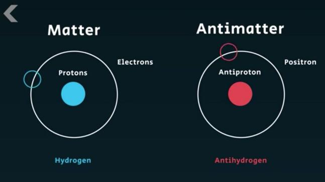
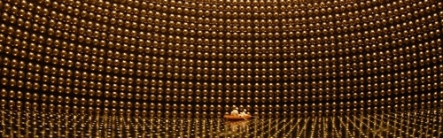

Antimatter
What, according to you, is the most dangerous thing in the world? It might be some animals, like tigers, or insects, like spiders, or you might even be scared of heights. For me, it is antimatter. Antimatter is the exact opposite of matter, as you can understand by the name.
Antimatter properties

Antimatter is governed by the same rules as matter, and it has the same properties as matter. There is the opposite of every particle in antimatter. The antimatter form of an electron is called a positron, the antimatter form of a proton is an antiproton, the antimatter form of a neutron is an antineutron, etc. The only difference between the matter and antimatter particles are the charges. The mass, speed, spin and all other properties are the same. For example, a positron is the same as an electron, but it has a positive charge. An antiproton is the same as a proton, but with a negative charge. If that’s the case, then one can say that an antineutron and neutron are one and the same things, right? Not quite. The difference between a neutron and an antineutron is that an antineutron has antiquarks (the antimatter form of quarks - particles that make up nucleons).
The antimatter problem
When you convert energy to matter (which is possible according to the infamous equation e = mc2), you also create the exact same amount of antimatter. So that means that if we use energy to make, let’s say, matter equivalent to 6 atoms, we will also be creating antimatter equivalent to 6 anti-atoms. Similarly, when the Big Bang took place, the amount of antimatter created was the same as the amount of matter created. But, if so, where is all this antimatter? This is the huge question that antimatter poses, because if the same amount of matter and antimatter were produced, then nothing should be in existence, as the matter and antimatter would have annihilated each other due to the high energy and collisions happening right after the Big Bang, right? We don’t know the answer to this question, but there are a few ideas:
- Idea 1: This says that the universe prefers matter more than antimatter, basically. For example, for every 1,000,000,000 antimatter particles created, there are 1,000,000,001 particles of matter created. In that way, when the 1 billion particles of matter and antimatter annihilate each other, that 1 remaining particle is what creates the universe we see today. We don’t know if this theory is right or wrong though, as of today.
- Idea 2: This idea is basically just saying that the antimatter is far away and we can’t see it, and we are living in a fully matter universe. It means that the antimatter universe (similar to the matter universe) and the matter universe are extremely far away from each other, and that’s why they aren’t interacting.
Experiments of finding antimatter
T2K Experiment - Situated in Japan, this experiment is the closest to answering the question about the lack of antimatter in our universe.  In this experiment, scientists send muon neutrinos and muon antineutrinos, travelling almost 300 km, to the Super-Kamiokande detector. Basically, neutrinos and antineutrinos are supposed to behave the same way (their only difference is the electric charge and quantum numbers, which is called the Charge-Parity Symmetry, or CP Symmetry), and a property of neutrinos is that they change form while traveling. For example, a muon neutrino can become an electron neutrino and vice versa. T2K measures this transformation, and if there is any asymmetry found in this, then that can suggest why we can't detect any antimatter in the universe.
Why is antimatter dangerous
Now lastly, why did I say that antimatter is the most dangerous thing in the world? When you combine matter and antimatter, you create energy (as you can create matter and antimatter through energy). We know this because of the e = mc2 equation, like I said before. But, the c2 in this equation is a huge number (90,000,000,000,000,000 = the value of c2), but it is just a number that you need to convert energy into mass (like feet into meters). That means that in Einstein’s equation, the energy created when matter and antimatter are combined is ginormous. For perspective, imagine you touch a matter paper clip and an antimatter paper clip together. What do you think that would result in? How much energy do you think will be created? The energy created by touching those two paper clips will be enough to launch 20 space shuttles into space. And currently, antimatter is being created in our very own laboratories on Earth as well, like the CERN. They create antimatter through extremely high-energy collisions, and store it by keeping it away from matter by electric and magnetic fields. The safe thing is that they have been creating antiprotons (they have also created anti-hydrogen atoms and anti-helium atoms) for the past 25 yrs, and yet all of that antimatter produced, when in contact with matter, can only create enough energy to warm up your cup of coffee. Therefore, we still have a long way to go before we are able to create enough antimatter to launch space shuttles. Moreover, these labs keep the protons in great care, using magnetic fields to keep them out of contact from matter.
Antimatter Timeline
https://timeline.web.cern.ch/timeline-header/86#421
30 June 1905: Albert Einstein published the Theory of Relativity, with the famous equation e = mc2 describing the motion of the macroscopical universe.
27 January 1926: Heisenberg and Schrodinger come up with a quantum theory, describing the behavior of the microscopic particles.
02 January 1928: Paul Dirac wrote an equation to combine the quantum theory and the Theory of Relativity to find out the behavior of an electron at a relativistic speed. However, he found that this equation could have two possibilities, a possibility of an electron with a negative charge, and another electron with a positive charge. This suggested the idea of antimatter.
09 September 1932: Carl Anderson discovered the positron, the ‘positive’ electron. He noticed the positron when he saw something positively charged with the same mass of an electron while studying showers of cosmic particles.
01 April 1954: The Bevatron is built, a proton accelerator that consists of a detector to sense antiprotons.
01 November 1955: The antiproton is discovered in the Bevatron. They detected a p
01 September 1965: The first antimatter nucleus is made, forming a deuteron (a nucleus of 1 antiproton and 1 antineutron).
18 August 1978: An antimatter particle is finally stored at CERN for 84 hours, compared to the previous record of ten thousandth of a second.
04 April 1981: On this day, the first antiproton and proton collision occurred at the Intersecting Storage Rings (ISR), which would be the place which found the existence of quarks and gluons in the coming future.
15 September 1995: The first anti-hydrogen was produced at CERN, being the first anti-atom ever created in a lab.
18 September 2002: ATHENA and ATRAP experiments are able to create slow-moving antimatter, or ‘cold antimatter’, which lets us study the properties of it. Basically, anti-hydrogen was formed when cold antiprotons and cold positrons were brought near each other, and they were kept away from the matter around them with a specially designed trap.
28 July 2011: ASACUSA measured the weight of the antiproton with an accuracy of 1 in a billion, which can give insight on a universal problem talked about in the ‘the antimatter problem’ section. This is done by shining a laser beam at antiprotons trapped in helium atoms, which, after tuned to a certain frequency, make a ‘quantum jump with the atoms’, which lets us calculate the mass of the antiproton. Now, there can be inaccuracies due to the slight jiggling of the atoms, but this was canceled out by a significant amount due to the laser beams coming from two opposite directions.
25 March 2013: ATRAP is able to measure the antiprotons magnetic moment with a chance of inaccuracy of 4.4 ppm. This was done by trapping the particle into an ‘electromagnetic cage’ (called a Penning trap). Basically, this trap has one iron ring electrode between two copper electrodes. The antiproton is trapped at the center of the iron ring electrode, and it is in ‘thermal contact with liquid helium’, keeping it at a very low temperature of about 4 degree Kelvin, to provide an almost perfect vacuum, removing any chances of matter particles annihilating the antiproton after coming into contact with it.
30 April 2013: The ALPHA experiment analyzed the effect of gravity on antimatter. After trapping the antiproton, they released it and analyzed the way it moved, which is the same way any matter particle would move due to the effect of gravity.
03 June 2014: The ALPHA experiment measured the charge of antihydrogen, which is neutral (nothing extraordinary). It just confirmed our knowledge of antimatter atoms and their charge.
12 August 2015: The BASE experiment trapped an antiproton using the Penning trap and compared the trapped anti-proton with a negatively charged Hydrogen atom (H-). The charge-to-mass ratio of the two particles was correct to 69 parts per 1000 billion.
03 November 2014: ASACUSA experiment at CERN measured the mass of an antiproton with higher precision, but using antiprotonic helium atoms (an atom where the antiproton takes the place of one the electrons of the helium atom), and is cooled down with the help of helium buffer-gas. Due to the low temperature, the movement of the particles within the atom is slower and smaller, which is why when a laser beam was shined at it, the frequency measurement became more precise.
19 December 2016: When electrons move, in an atom, they either absorb or emit light of a specific wavelength. Scientists measured this wavelength, to see if the matter and antimatter light spectrum is the same, which, according to current calculations, it is.
Image Credits: T2K, IndiaToday, CERN
References
- “What is Antimatter?” Youtube, uploaded by Fermilab, 15 November 2011, https://www.youtube.com/watch?v=en2S1tBl1_s.
- Ayshford, Emily. “T2K advances investigation of matter-antimatter imbalance.” Symmetry, 15 April 2020, https://www.symmetrymagazine.org/article/t2k-advances-investigation-of-matter-antimatter-imbalance.
- “The Story Of Antimatter.” Cern, https://timeline.web.cern.ch/timeline-header/86.
- “Where is all the antimatter? Even creating antihydrogen in a lab cannot explain its lack in the universe.” IndiaToday, 6 April 2018, https://www.indiatoday.in/education-today/gk-current-affairs/story/where-is-all-the-antimatter-scientists-create-antihydrogen-atom-to-find-answers-html-1206368-2018-04-06.
- Sutton, Christine. "antimatter". Encyclopedia Britannica, 31 Aug. 2022, https://www.britannica.com/science/antimatter.